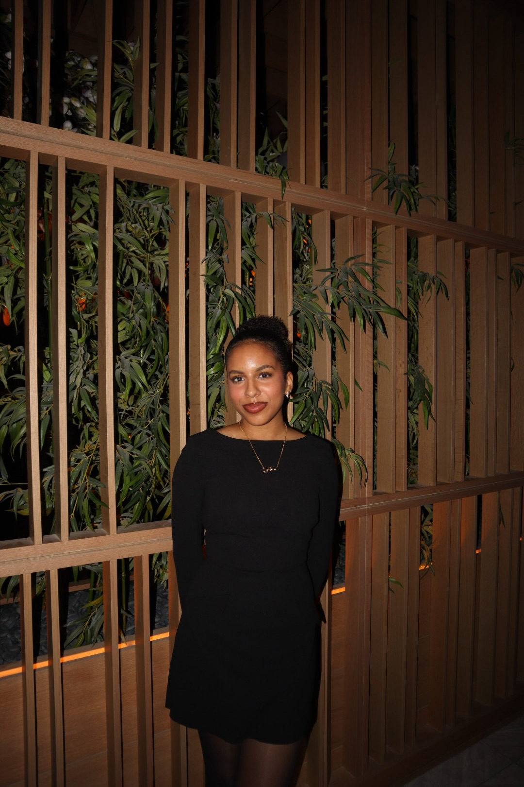
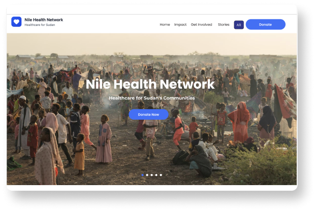

UX DESIGNER · UMD HCIM
Curious about people.
Intentional about design.
I’m Saja. I bring cognitive science, field research, and a love of detail to the interfaces I design.
↓
always.English + العربية
Research → decisionsThoughtful interactionsEnglish ↔ العربيةDetails that matter
A FEW THINGS I’VE BEEN WORKING ON
01 — 03Selected work✳
01 / INTERACTION DESIGN
YouTube Music
A place to listen together,
even when you’re apart.
PRESS PLAY.
STAY CLOSE.♫
STAY CLOSE.
9:41 ● ▰
▶ Music •••
● LISTENING TOGETHERAFTER
HOURS♫
HOURS♫
Late-night study
Same song. Your own headphones.
↝ ◀ Ⅱ ▶ ↻
SLH3 listening♡
02 / BILINGUAL WEB DESIGN
Nile Health Network
Making room for trust,
context, and two languages.

03 / CLIENT RESEARCH
Horizon Farm Credit
Understanding the work
behind the dashboard.
THE QUESTIONS BEHIND THE INTERFACE
What needs
attention?
attention?
Where does
the data go?
the data go?
What happens
next?
People → Reports → Decisionsnext?